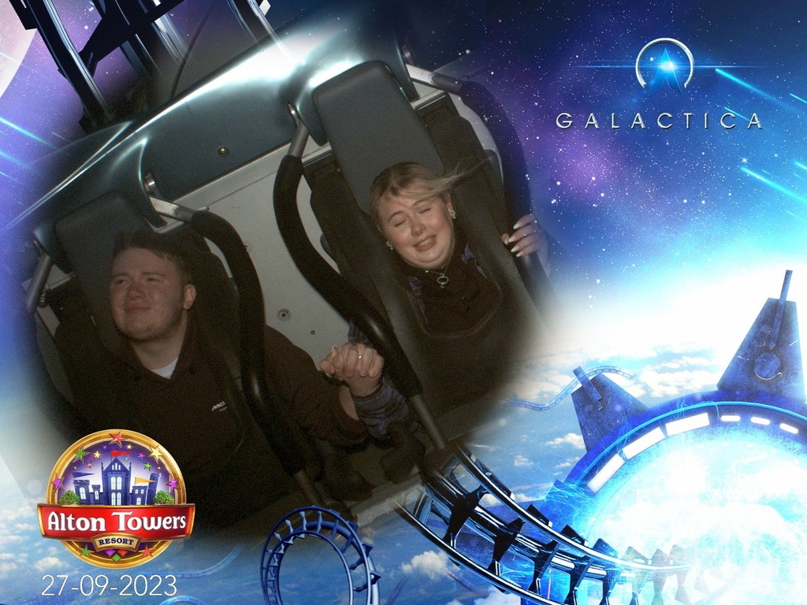
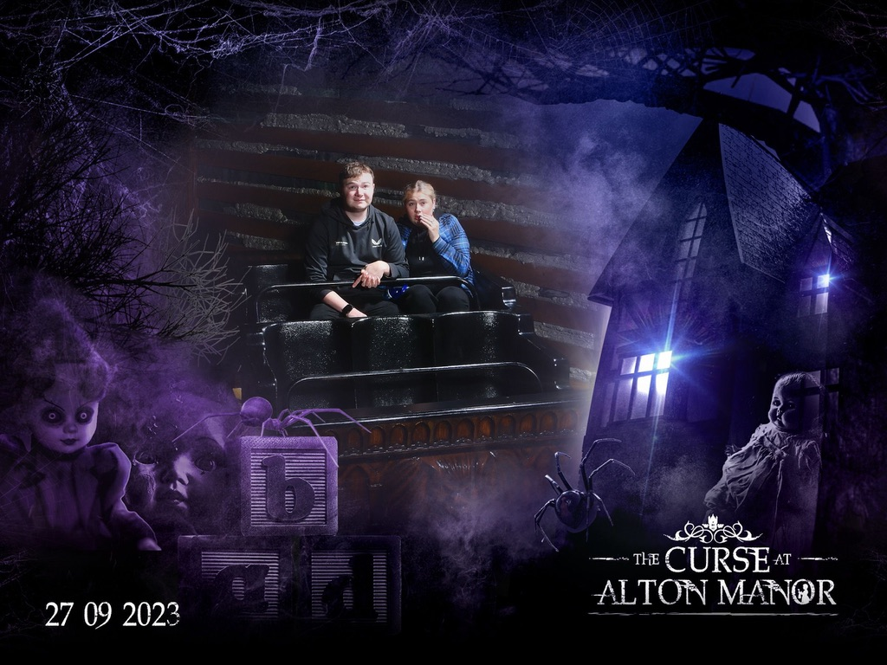
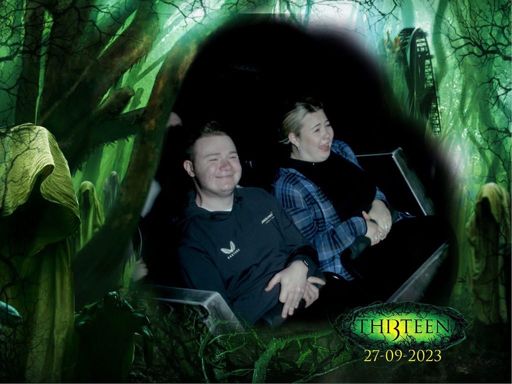
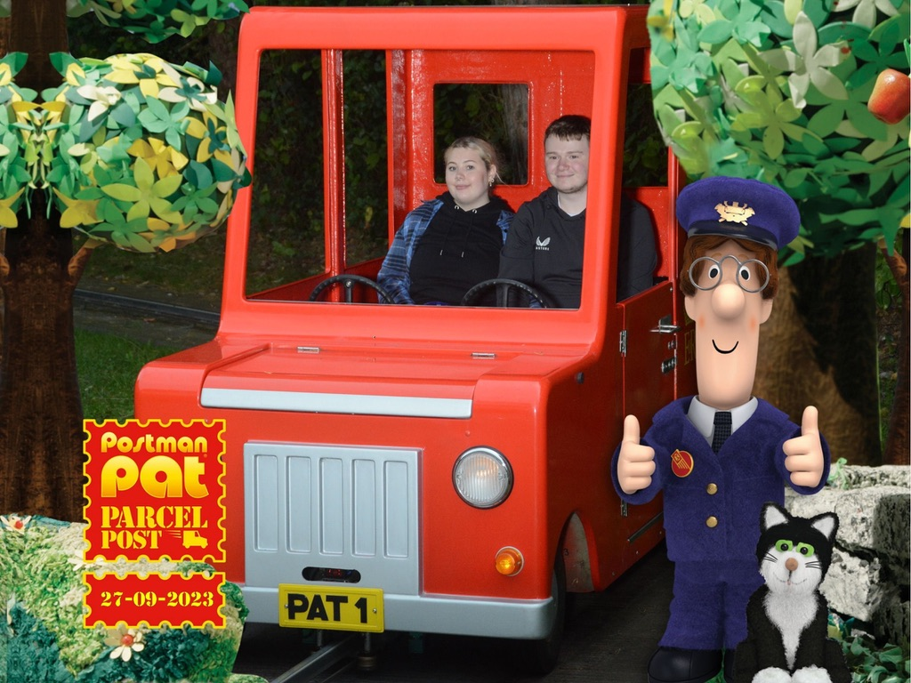

Alton towers was are second stop using out Merlin pass. What better way to use it than flinging ourselves around on some rollercoaster?
The day started with a very easy drive up to the theme park featuring some "amazing" singing from Jake in the driver's seat. We arrived there just before opening time to be let into the theme park through the back entrance which led straight toward Air which was our first ride of the day. It's safe to say being lowered forward does make you feel more alive on a rollercoaster. That and I also feared for my life. Jake then led us on to the Alton Manor ride (which used to be dual) to what we thought was gonna be a relaxing ride, it was not a relaxing ride, it was more creepy and disturbing than relaxing.
 After that ride, we decided to take a stroll through the Haunted Hollow walk which led us out to our next ride of the day Smiler which was as good as it always is. After a quick wee break, Oblivion was next, which literally took my breath away for a few seconds. Once we tackled Oblivion we headed over to Burger Kitchen for some lunch to enjoy some amazing burgers.
Once lunch was eaten we decided The Gangster Granny ride was next in which we helped steal the crown jewels. We headed over to our next ride of the day which was Rita to be told it was closed, so instead we made our way over to 13, my stomach wasn't ready for that ride. Pinball Whizzer was next up in which we talked to a boy who had ridden in 6 times in a row already, how he was standing straight I will never know.
Being the big kid that he is Jake took us over to Cbeebies land where we enjoyed the treetops ride, did a mission with the octonauts on their mini rollercoaster, and then helped deliver some post with Postman Pat. After our adventures in Cbeebies land, we took a stroll through October Fest heard a very lively band and Jake got a massive soft pretzel. We then tried and failed to get on Wickerman sadly, so we Choo Choo'd our way to mine train instead then circled back and got on Wickerman. Then we finally got to ride Rita when it opened again, decided my stomach could take 13, and did it again. We had a bit of time to kill so we had a walk to Splash Landing to have a look around and then headed back to do Air one last time for our last ride.
Jake had then booked us into the Rollercoaster restaurant, where we encountered a waiter who gives hospitality people a bad name, never the less we enjoyed our food that rolled its way down to us. After we had eaten all we could handle we made our way back to the car for a relaxing journey home.
Thank you all for reading!